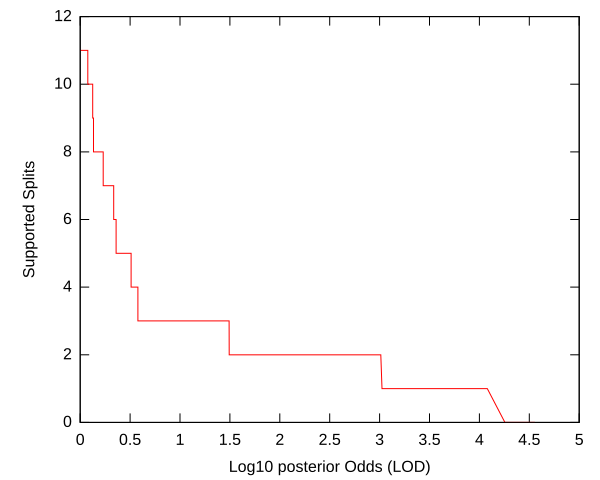
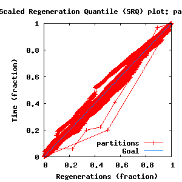
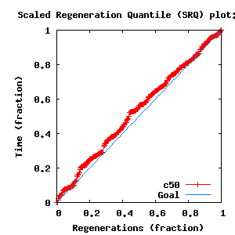
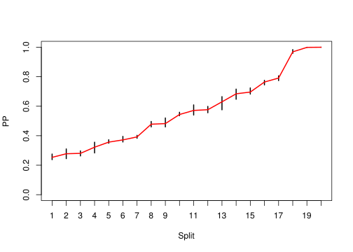
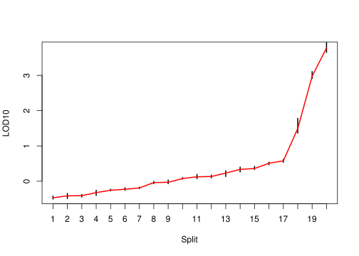

Sections:
directory: /home/biodept/br51/Work
subdirectory: 25-6
command line: bali-phy 25.fasta --smodel GTR+DP[4]
directory: /home/biodept/br51/Work
subdirectory: 25-7
command line: bali-phy 25.fasta --smodel GTR+DP[4]
directory: /home/biodept/br51/Work
subdirectory: 25-8
command line: bali-phy 25.fasta --smodel GTR+DP[4]
directory: /home/biodept/br51/Work
subdirectory: 25-9
command line: bali-phy 25.fasta --smodel GTR+DP[4]
| Partition | Sequences | Lengths | Substitution Model | Indel Model |
|---|---|---|---|---|
| 1 | 25.fasta | 111 - 131RNA nucleotides | GTR+DP[4] | RS07 |
| burn-in = 10000 samples | sub-sample = 10 | P(data|M) = -2725.989 +- 0.446 |
| Complete sample: 35951 topologies | 95% Bayesian credible interval: 34151 topologies |
| chain # | Iterations (after burnin) |
|---|---|
| 1 | 90000 samples |
| 2 | 90000 samples |
| 3 | 90000 samples |
| 4 | 90000 samples |

| Partition support: Summary |
| Partition support graph: SVG |
| 50% consensus | +L | SVG | |||||
| 66% consensus | +L | SVG | |||||
| 80% consensus | +L | SVG | |||||
| 90% consensus | +L | SVG | |||||
| 95% consensus | +L | SVG | |||||
| 99% consensus | +L | SVG | |||||
| 100% consensus | +L | SVG | |||||
| MAP | +L | SVG | |||||
| greedy | +L | SVG |
| Diff | Min. %identity | # Sites | Constant | Informative | ||||
|---|---|---|---|---|---|---|---|---|
| Initial | FASTA | HTML | Diff | 12.7% | 131 | 0 (0%) | 126 (96.2%) | |
| Best (WPD) | FASTA | HTML | AU | 31.2% | 198 | 11 (5.56%) | 124 (62.6%) |


| burnin (scalar) | Ne (scalar) | Ne (partition) | ASDSF | MSDSF | PSRF-CI80% | PSRF-RCF |
|---|---|---|---|---|---|---|
| 920 | 425.7 | 877.654 | 0.012 | 0.038 | 1.001 | 1.005 |


| Statistic | Median | 95% BCI | ACT | Ne | burnin | PSRF-CI80% | PSRF-RCF | |
|---|---|---|---|---|---|---|---|---|
| prior | -567.5 | (-627.9, -517.6) | 11.46 | 3140 | 338 | 1.001 | 1.002 | Trace |
| prior_A1 | -431.2 | (-486.9, -388.8) | 8.606 | 4183 | 158 | 0.9997 | 1.005 | Trace |
| likelihood | -2696 | (-2725, -2666) | 10.65 | 3381 | 182 | 1.001 | 1 | Trace |
| logp | -3263 | (-3314, -3220) | 9.763 | 3687 | 158 | 1.001 | 1.005 | Trace |
| Heat.beta | 1 | |||||||
| Main.mu1 | 0.2622 | (0.1645, 0.4394) | 1.464 | 24600 | 122 | 1 | 0.9978 | Trace |
| S1.GTR.ag | 0.1601 | (0.1113, 0.2214) | 1.442 | 24971 | 152 | 0.9999 | 1.001 | Trace |
| S1.GTR.at | 0.2911 | (0.2102, 0.3807) | 1.387 | 25963 | 143 | 0.9998 | 0.9997 | Trace |
| S1.GTR.ac | 0.02198 | (0, 0.06543) | 2.498 | 14414 | 184 | 1.001 | 0.9991 | Trace |
| S1.GTR.gt | 0.07066 | (0.03299, 0.1172) | 3.162 | 11386 | 128 | 0.9999 | 1.005 | Trace |
| S1.GTR.gc | 0.08016 | (0.04423, 0.1269) | 2.867 | 12556 | 193 | 0.9997 | 0.9996 | Trace |
| S1.GTR.tc | 0.3677 | (0.2872, 0.4551) | 1.961 | 18360 | 79 | 1 | 0.9975 | Trace |
| S1.F.piA | 0.2149 | (0.1773, 0.2596) | 1.674 | 21512 | 129 | 1.001 | 1.001 | Trace |
| S1.F.piG | 0.3056 | (0.2602, 0.3539) | 1.385 | 25997 | 135 | 1 | 0.9997 | Trace |
| S1.F.piU | 0.1938 | (0.1656, 0.2264) | 2.777 | 12967 | 239 | 0.9999 | 0.9939 | Trace |
| S1.F.piC | 0.2836 | (0.2445, 0.3265) | 1.975 | 18232 | 114 | 1.001 | 0.9974 | Trace |
| S1.DP.f1[S1] | 0.174 | (0.1, 0.2706) | 1.256 | 28655 | 190 | 1 | 0.996 | Trace |
| S1.DP.f2[S1] | 0.2992 | (0.1048, 0.4885) | 1.059 | 34003 | 68 | 1.001 | 1 | Trace |
| S1.DP.f3[S1] | 0.2915 | (0.09519, 0.4738) | 2.042 | 17633 | 122 | 1.001 | 1.005 | Trace |
| S1.DP.f4[S1] | 0.2315 | (0.09811, 0.3996) | 2.87 | 12543 | 92 | 0.9996 | 0.9982 | Trace |
| S1.DP.rates1[S1] | 0.007786 | (0.001219, 0.02499) | 1.429 | 25192 | 244 | 0.9999 | 0.9996 | Trace |
| S1.DP.rates2[S1] | 0.1067 | (0.05853, 0.1708) | 3.132 | 11494 | 213 | 0.9992 | 0.9946 | Trace |
| S1.DP.rates3[S1] | 0.2295 | (0.1642, 0.3693) | 2.215 | 16251 | 105 | 1 | 0.9947 | Trace |
| S1.DP.rates4[S1] | 0.6489 | (0.4967, 0.7554) | 3.677 | 9790 | 156 | 0.9976 | 0.991 | Trace |
| I1.RS07.logLambda | -3.919 | (-4.289, -3.551) | 2.037 | 17672 | 141 | 1.001 | 1 | Trace |
| I1.RS07.meanIndelLength | 2.162 | (1.714, 2.893) | 17.96 | 2005 | 341 | 1 | 0.9961 | Trace |
| |A1| | 174 | (161, 199) | 84.59 | 425 | 920 | 0.9231 | 0.9873 | Trace |
| #indels1 | 58 | (50, 67) | 6.318 | 5698 | 130 | 0.9091 | 1.005 | Trace |
| |indels1| | 121 | (103, 149) | 32.7 | 1100 | 337 | 0.9587 | 0.9969 | Trace |
| #substs1 | 714 | (695, 731.4) | 25.23 | 1426 | 328 | 0.9644 | 0.9879 | Trace |
| |A| | 174 | (161, 199) | 84.59 | 425 | 920 | 0.9231 | 0.9873 | Trace |
| #indels | 58 | (50, 67) | 6.318 | 5698 | 130 | 0.9091 | 1.005 | Trace |
| |indels| | 121 | (103, 149) | 32.7 | 1100 | 337 | 0.9587 | 0.9969 | Trace |
| #substs | 714 | (695, 731.4) | 25.23 | 1426 | 328 | 0.9644 | 0.9879 | Trace |
| |T| | 11.88 | (9.365, 15.89) | 3.476 | 10358 | 171 | 1.001 | 0.9962 | Trace |
{kind=link}
{kind=link}
{kind=link}
{kind=link}
{kind=link}
{kind=link}
{kind=link}
{kind=link}
{kind=link}
{kind=link}
{kind=link}
{kind=link}
{kind=link}
{kind=link}
{kind=link}
{kind=link}
{kind=link}
{kind=link}
{kind=link}
{kind=link}
{kind=link}
{kind=link}
{kind=link}
{kind=link}
{kind=link}
{kind=link}
{kind=link}
{kind=link}
{kind=link}
{kind=link}
{kind=link}
{kind=link}
{kind=link}
{kind=link}
{kind=link}
{kind=link}
{kind=link}
{kind=link}
{kind=link}
{kind=link}
{kind=link}
{kind=link}
{kind=link}
{kind=link}
{kind=link}
{kind=link}